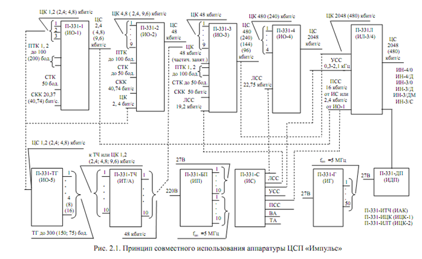

Тема №5. Устройство и эксплуатация цифровых систем телекоммуникаций
Занятие№1. Общие сведения об аппаратуре комплекса цифровых систем передачи П-331 «Импульс».
Учебные вопросы:
Литература:
1. Назначение, состав, технические данные, цифровой системы передачи П-331 «Импульс
1.1. Общие сведения об аппаратуре комплекса цифровых систем передачи «Импульс»
Комплекс ЦСП «Импульс» является средством цифрового каналообразования для различных типов линий связи – радиорелейных, тропосферных, кабельных и спутниковых. Он реализует организационно-технические принципы передачи информации от различных оконечных устройств (телефонных и телеграфных аппаратов, аппаратуры передачи данных) с приведением ее к единой цифровой форме представления. Создание аппаратуры «Импульс» явилось конкретным шагом постепенной реализации комплекса технических средств каналообразования цифровой системы интегрального обслуживания (ЦСИО), построение которой определено в качестве генеральной перспективы совершенствования существующей и создания перспективной системы связи.
Комплекс аппаратуры П-331 предназначен для построения цифровых трактов кабельных, радиорелейных, тропосферных и спутниковых линий с пропускной способностью 480 и 2048 кбит/с, временного объединения –разделения цифровых каналов со скоростями 1,2; 2,4; 4,8; 9,6; 48 и 480 кбит/с, организация каналов тональной частоты с дельта-модуляцией и телеграфных каналов со скоростями передачи 75, 100, 150, 300 Бод.
Состав.
Условно аппаратуру комплекса можно разделить на следующие функциональные группы:
аппаратура образования цифровых линейных трактов П-331Л (ИЛ3/4), П-331-3Р (ИН-3), П-331-3РГ (ИН-3/Д), П-331-3РС (ИН-3/6), П-331-3РГС (ИН-3/СД), П-331-4Р (ИН-4), П-331-4РГ (ИН-4/Д), П-331ДП ((ИДП);
аппаратура временного объединения-разделения цифровых каналов (ЦК) П-331-1 (ИО-1), П-331-2А(Б) (ИО-2А(Б)), П-331-3А(Б) (ИО-3А(Б)), П-331-4 (ИО-4);
аппаратура каналов тональной частоты (ТЧ) и телеграфных каналов (ТК) П-331ТЧ (ИТ/А), П-331ТГ (ИО-5);
генераторное и электропитающее оборудование П-331Г (ИГ), П-331ГС (ИГС), П-331БП (ИП);
аппаратура служебной связи и контрольно-измерительное оборудование П-331С (ИС), П-331ППУ (ППУ), П-331ИЛТ (ИЦК-2), П-331ИЦК (ИЦК-1), П-331ИТЧ (ИАК), П-331ИР (ИНТ).
Основные тактико-технические характеристики. |
|
|---|---|
Характеристика комплекса |
Значение |
Групповая скорость передачи, кбит/с |
480, 2048 |
Протяженность линии связи, км |
1000, 2500 |
Длина секции дистанционного питания, км |
100 |
Длина регенерационного участка, км |
4, 8 |
Тип используемого кабеля |
П-296, МКСБ |
Тип линии |
Однокабельная, двухкабельная |
Скорость образуемых цифровых каналов, кбит/с |
1,2; 2,4; 4,8; 9,6; 48; 96, 144, 240, 480 |
Скорость образуемых телеграфных каналов, Бод |
75, 100, 150, 300 |
Число каналов тональной частоты на основе ЦК-48 кбит/с |
10 |
Электропитание |
-27В, ~220В |
Аппаратура комплекса «Импульс» может работать по кабелю П-296 (скорости передачи 480 и 2048 кбит/с) и МКС (скорость передачи 480 кбит/с). Максимально заданная дальность связи при скорости передачи 2048 кбит/с составляет 2500 км, а при скорости 480 кбит/с – 1000 км. Длины секции ДП определяются устройствами участковой служебной связи (ППУ). В состав ОРП входят два моноблока ИЛ-3/4, моноблоки ИС, ИДП, ИП.
Режимы работы комплекса «ИМПУЛЬС» приведены в табл. 1.1 и 1.2.
Аппаратура комплекса «Импульс» выполнена в виде стандартных моноблоков (кроме ИН и ППУ), габариты которых равны 640?290?180 мм. ИН-3(4)/О выполнен в виде цилиндра диаметром 140 мм и длиной 550 мм, а ППУ имеет габариты 350?265?150 мм. ИН питается дистанционно от ИЛ-3/4 (ток ДП 100 мА), ППУ – автономно от двух батарей ГБ-10-У-1,3. Остальная аппаратура комплекса питается от ИП.
Предусмотрено аварийное электропитание ИС от аккумуляторной батареи напряжением 15 В, потребляемая мощность в этом случае равна 6 Вт.
ИО-4 |
1 |
240 |
1 22,75 |
2048 |
|||
3 |
480 |
1 22,75 |
2048 |
||||
4 |
480 |
1 22,75 |
2048 |
||||
| ИО-3 | 1 |
48 |
2 до 100 |
1 до 50 |
1 19,2 |
96 |
|
2 |
48 |
2 до 100 |
1 до 50 |
1 19,2 |
144 |
||
4 |
48 |
2 до 100 |
1 до 50 |
1 19,2 |
240 |
||
9 |
48 |
2 до 100 |
1 до 50 |
1 19,2 |
480 |
||
| ИО-2 | 1 |
2,4 |
1 до 100 |
1 50 |
1 40,74 |
48 |
|
9 |
4,8 |
||||||
| ИО-1 | 1 |
4,8 |
2 до 100 |
1 50 |
1 40,74 |
9,6 |
|
1 |
2,4 |
||||||
3 |
2,4 |
2 до 100 |
1 50 |
1 40,74 |
9,6 |
||
1 |
2,4 |
2 до 100 |
1 50 |
1 20,37 |
4,8 |
||
1 |
1,2 |
||||||
3 |
1,2 |
2 до 100 |
1 50 |
1 20,37 |
4,8 |
||
1 |
1,2 |
2 до 100 |
1 50 |
1 20,37 |
2,4 |
||
Аппаратура объединения (разделения) |
Кол-во |
Скор. кбит/с. |
Кол-во Скор. бод |
Кол-во Скор. бод |
Кол-во Скор. бод |
Кол-во Скор. бод |
Групповая скорость кбит/с. |
Цифровые каналы |
ПТК | СТК | СКК | СКСС |
|||
Доп. кан. |
|||||||
Таблица 1.2
Скорость на групповом выходе аппаратуры ИО-5, кбит/с |
Телеграфные каналы |
|
|---|---|---|
| Скорость, Бод | Количество |
|
1,2 |
75 |
4 |
1,2 |
150 |
2 |
1,2 |
300 |
1 |
2,4 |
75 |
8 |
2,4 |
150 |
4 |
2,4 |
300 |
2 |
4,8 |
75 |
16 |
4,8 |
150 |
4 |
4,8 |
300 |
4 |
Предельные температуры окружающей среды для работы аппаратуры ИН, ППУ, ПИТ составляет от минус 40 до плюс 50°С, а относительная влажность не более 98 % при температуре не выше 40°С.
1.2. Электрические параметры комплекса и отдельных элементов
1.2.1. Электрические параметры цифровых каналов и трактов
К электрическим параметрам цифровых трактов относятся:
- номинальная скорость передачи цифрового сигнала;
- вероятность ошибок;
- относительная нестабильность группового цифрового сигнала на выходе;
- допустимая относительная нестабильность цифрового сигнала на входе канала;
- допустимые фазовые дрожания на выходе канала;
- вид стыка.
При максимально заданной дальности связи вероятность ошибок в цифровых каналах, образованных на ПКЛ, должно быть не более 10-6.
В аппаратуре комплекса применены так называемые линейный и внутристанционный стыки.
Линейный стык имеет следующие характеристики: вход и выход канала симметричный, входное сопротивление 150 0м, форма сигнала – биимпульсная, допустимое изменение амплитуды сигнала на входе канала от 0,1 В до 1,15 В, амплитуда выходного сигнала на нагрузке 150 0м – 1 В. Он образуется одной симметричной цепью, обладает избыточностью и поэтому обеспечивает передачу как информационных сигналов, так и сигналов тактовой синхронизации.
Внутристанционный стык имеет следующие характеристики:
- вход и выход канала несимметричные;
- форма сигнала униполярная;
- амплитуда сигнала не более 0,4 В (логический нуль) и от 2,4 до 4,5 В (логическая единица);
- входное и выходное сопротивление 150 0м.
Он образуется двумя несимметричными цепями: цепью информационного сигнала (ИС) и тактовой синхронизации (ТС). Сигналы по этим цепям фазированы таким образом, что значащие моменты ИС совпадают с положительными фронтами импульсов ТС (форма сигнала ТС прямоугольная равноскважная). Внутристанционный стык используется при длинах соединительных линий не более 10 м.
1.2.2. Электрические параметры каналов ТЧ
Режимы работы (4ПР ОК; 4ПР ТР), относительные уровни на входе и выходе, остаточные затухания, частотная характеристика остаточного затухания, – стандартные. Коэффициент нелинейных искажений не более 1,5 %, в том числе, по третьей гармонике не более 1 % при относительном уровне передачи на входе канала и частоте сигнала 800 Гц. Защищенность от внятных переходных помех между каналами на частоте 800 Гц не менее 65 дБ. Уровень взвешенного (псофометрического) шума на выходе свободного канала в точке с относительным уровнем плюс 4 дБ не более 46 дБ. защищенность от шумов квантования для гармонического сигнала с частотой 800 Гц не менее 20 дБ в диапазоне уровней входного сигнала от минус 30 до минус 25 дБ и не менее 25 дБ при изменении уровня входного сигнала от минус 25 до плюс 3 дБ. Номинальное значение входного и выходного сопротивлений 600 Ом.
1.2.3.Электрические параметры ТЛГ каналов
Телеграфные каналы, образуемые аппаратурой ИО-5, ИО-1, ИО-2 и ИО-3, а также служебные телеграфные каналы аппаратуры ИО-1, ИО-2, ИО-3 имеют следующие параметры линейных окончаний:
- вход и выход канала симметричные с возможностью заземления одного из проводов вне аппаратуры;
- входное сопротивление 1000 Ом;
- выходное сопротивление 51-510 Ом;
- входной сигнал – двухполюсные посылки с напряжением от плюс 15 до плюс 25 В на нагрузке 1000 Ом;
- краевые искажения на выходе канала при максимальной скорости телеграфирования не более ±5 % от длительности единичного интервала.
1.2.4. Электрические параметры синхронных контрольных каналов.
Синхронные контрольные каналы на всех ступенях объединения-разде-ления цифровых сигналов аналогичны и образованы четырьмя несимметричными цепями:
- передаваемые данные;
- принимаемые данные;
- синхронизация элементов передаваемого сигнала;
- синхронизация элементов принимаемого сигнала.
Входные устройства цепей «передаваемые данные» рассчитаны на передачу двухполюсных посылок постоянного тока с максимальным напряжением +15 В при входном сопротивлении 3-7 кОм, а напряжение срабатывания этих устройств составляет от +3 до +5 В.
Выходные сигналы цепей «принимаемые данные» представляет собой двухполюсные посылки постоянного тока с амплитудой от плюс 5 до плюс 15 В на сопротивление нагрузки 3-7 кОм. Выходные сигналы цепей синхронизации представляют собой двухполюсные посылки постоянного тока с амплитудой от плюс 5 до плюс 15 В на сопротивлении нагрузки 3-7 кОм, форма этих сигналов – меандр, скважность 2.
1.2.5. Электрические параметры проводных линейных трактов
Скорость передачи цифрового сигнала 480 и 2048 кбит/с. Вид сигнала в линии – квадратичный с чередованием полярности импульсов (ЧПИ).
Длительность импульсов 1040 нс при скорости передачи 480 кбит/с и 244 нс при скорости 2048 кбит/с.
Амплитуда импульсов равна 3 В при работе по однокабельной линии П-296 или МКС и 2 В при работе по двухкабельной линии МКС.
2. Структурная схема цифровой системы передачи П-331 «Импульс».
Структурная схема совместного использования аппаратуры комплекса «Импульс» представлена на рис. 2.1.
Аппаратура объединения (разделения) цифровых сигналов может иметь до четырех ступеней временного объединения (разделения) цифровых сигналов, которые могут включаться последовательно друг за другом и позволяют в зависимости от режимов работы образовать:
- аппаратура ИО-1 (первая ступень) – цифровые каналы со скоростями передачи 1,2; 2,4 и 4,8 кбит/с при скорости группового сигнала 2,4; 4,8 и 9,6 кбит/с соответственно;
- аппаратура ИО-2 (вторая ступень) – цифровые каналы со скоростями передачи 2,4; 4,8 и 9,6 кбит/с при скорости группового сигнала 48 кбит/с;
- аппаратура ИО-З (третья ступень) – 1, 2, 4 или 9 цифровых каналов со скоростью передачи 48 кбит/с при скоростях группового сигнала 96, 144, 240 и 480 кбит/с соответственно;
- аппаратура ИО-4 (четвертая ступень) – цифровые каналы со скоростями передачи 480 и 240 кбит/с при скорости группового сигнала 2048 кбит/с.
Различные ступени объединения (разделения) могут применяться самостоятельно. При совместном использовании групповые цифровые сигналы младших ступеней передаются по соответствующим цифровым каналам старших ступеней.
Кроме цифровых каналов на каждой ступени объединения (разделения) образуются следующие дополнительные каналы:
- прозрачные телеграфные каналы (ПТК);
- служебные телеграфные каналы (СТК);
- синхронные контрольные каналы (СКК);
- синхронные каналы служебной связи (СКСС).
Аппаратура образования каналов ТЧ (ИТ/А) имеет в своем составе десять дельта-кодеков, объединенных попарно. Любая пара дельта-кодеков при необходимости может быть заменена на пару трансформаторов скоростей (адаптеров), которые преобразовывают цифровые сигналы со скоростью передачи 1,2 (или 2,4; 4,8 и 9,6) кбит/с в цифровой сигнал со скоростью передачи 48 кбит/с. Цифровые выходы аппаратуры ИТ/А подключаются к соответствующим цифровым каналам аппаратуры ИО-3.
Аппаратура линейного оборудования включает оконечное оборудование линейного тракта (моноблок ИЛ-3/4) и необслуживаемые регенераторы для скорости передачи 480 кбит/с (ИН-3) и 2048 кбит/с (ИН-4). Последние различают также по типу линий. Так, ИН-3/О (ИН-4/О) предназначен для применения на полевых кабельных линиях (кабель П-296, О – оперативный), ИН-3/Д (ИН-4/Д) на линиях длительной эксплуатации (кабель П-296), ИН-3/ДМ на однокабельных линиях (кабель МКС), ИН-3/С – симплексный регенератор на двухкабельных линиях (кабель МКС).
Аппаратура ИЛ-3/4 обеспечивает:
- формирование линейного цифрового сигнала, поступающего с ИО-3 (третий режим, скорость передачи 480 кбит/с) или с ИО-4 (четвертый режим, скорость передачи 2048 кбит/с);
- сопряжение цифрового линейного тракта с аппаратурой ИКМ-120 при вводе цифрового линейного сигнала со скоростью передачи 2048 кбит/с в аппаратуру ИКМ-120 вместо любой первичной системы ИКМ-30 (стык НDВ-3);
- сопряжение с аппаратурой радиорелейных, тропосферных и спутниковых линий связи;
- образование цепи дистанционного питания НРП;
- образование цепи для организации участковой служебной связи в пределах секции дистанционного питания:
- образование цифрового канала со скоростью передачи 16 кбит/с для постанционной служебной связи на ПКЛ;
- функциональный контроль цифрового линейного тракта ПКЛ;
- дистанционный контроль НРП, определение участка обрыва и короткого замыкания цепи дистанционного питания.
Аппаратура образования телеграфных каналов (ИО-5) позволяет получить при скоростях передачи группового цифрового сигнала 1,2; 2,4 и 4,8 кбит/с соответственно 4, 8 и 16 прозрачных телеграфных каналов со скоростью телеграфирования до 75 бод. Каналы объединены в четыре группы по четыре канала (1, 2, 3, 4; 5, 6, 7, 8; 9, 10, 11, 12; 13, 14, 15, 16), в каждой из которых можно увеличить в одном канале скорость телеграфирования за счет уменьшения числа каналов.
В состав комплекса входит аппаратура питания (ИП) и дистанционного питания (ИДП). ИП предназначена для электропитания всех моноблоков комплекса.
Моноблок ИП имеет 10 выходов постоянного напряжения 27 В с максимальной суммарной мощностью потребления в нагрузке 280 Вт и 10 выходов генератора напряжением 25 мВ опорной частоты 5МГц.
Питание ИП осуществляется от сети переменного тока 220 В 50 Гц, потребляемая мощность при полной нагрузке около 600 ВА.
ИДП обеспечивает дистанционное питание НРП по фантомной цепи током 100 мА по схеме «провод-провод». В зависимости от числа питаемых НРП напряжение на выходе ИДП может изменяться от 85 до 550 В.
В составе ИДП имеются два блока ДП, которые могут обеспечивать дистанционное питание в два направления либо работать в одно направление с автоматическим резервированием.
Аппаратура генератора опорной частоты (ИГ) предназначена для обеспечения комплекса напряжением опорной частоты 5 МГц (на крупных узлах связи). ИГ имеет 50 выходов, на каждом из которых при нагрузке 75 0м обеспечивается напряжение 25 мВ. Частота опорного генератора 5 МГц. В состав ИГ входят два опорных генератора – основной и резервный, переключение с основного на резервный производится автоматически либо вручную.
Аппаратура служебной связи (ИС) устанавливается на оконечных станциях и обслуживаемых регенерационных пунктах. Она предназначена для организации линейной (ЛСС), постанционной (ПСС) и участковой (УСС) служебной связи. Линейная служебная связь организуется на всех линиях при использовании цифровых синхронных каналов служебной связи, образуемых ИО-З и ИО-4, а постанционная служебная связь – по цифровому каналу со скоростью передачи 16 кбит/с, образуемому в ИЛ-3/4. Каналы ПСС и ЛСС имеют ЭППЧ 0,3-3,4 кГц, для их преобразования к цифровому виду применена адаптивная дельта-модуляция.
Двухпроводный низкочастотный канал участковой служебной связи организуется по фантомной цепи, образованной на кабельной линии аппаратурой ИЛ-3/4. На НРП в этот канал включаются переносные переговорные устройства.
Моноблок ИС обеспечивает каналы ЛСС, ПСС и УСС по двум направлениям с возможностью передачи их выходов на вынесенные устройства, а также организации их транзита между собой.
Измерительная аппаратура предназначена для оценки качества цифровых и аналоговых каналов цифровых трактов, а также проверки кабеля П-296 и НРП.
ИЦК-1 позволяет измерять вероятность ошибки и фазовые дрожания в цифровых каналах со скоростями 1,2; 2,4; 4,8; 9,6 и 48 кбит/с, ИЦК-2 – те же параметры в цифровых каналах со скоростями передачи 240 и 480 кбит/с, а также в цифровых трактах со скоростями передачи 480 и 2048 кбит/с.
ИАК предназначен для измерения параметров каналов ТЧ. Он позволяет оценить защищенность от шумов квантования, частотную характеристику остаточного затухания, уровни взвешенного и невзвешенного шума.
ИНТ предназначен для определения переходного затухания на ближнем конце кабеля П-296, а также для проверки исправности ИН-3 и ИН-4.
Цифровые каналы используются для работы любой оконечной аппаратуры с относительной нестабильностью сигналов не хуже 10-4, а каналы ТЧ – для открытой и закрытой телефонной связи, работы аппаратуры передачи данных, многоканального тонального телеграфирования и факсимильной связи.
В зависимости от типа каналов и вариантов их использования обеспечиваются:
- достаточно высокое качество связи (разборчивость до 93%) – при передаче речевых сигналов в составном канале, состоящем из девяти простых каналов, образованных аппаратурой ИТ/А;
- приемлемое качество связи – при работе аппаратуры типа Т-217 по каналу ТЧ такой же структуры;
- приемлемое качество связи – при работе аппаратуры передачи данных, тонального телеграфирования и другой оконечной аппаратуры со скоростью передачи до 4,8 кбит/с (с применением УПС) по каналу ТЧ, состоящему из трех простых каналов, образованных аппаратурой ИТ/А. Эта же аппаратура при скорости передачи 9,6 кбит/с не может работать даже по простому каналу.